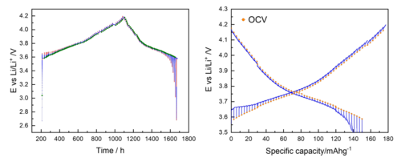
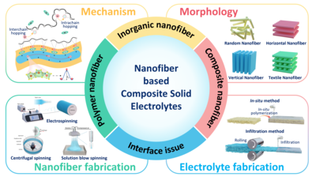
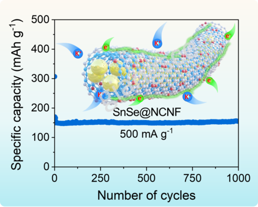
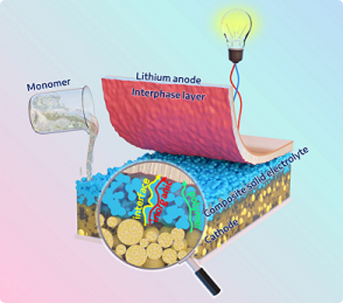

|
|
|
last updated on May 30, 2025
|
|
Education
Chonnam National University,
Gwangju, South Korea
M.S.-Ph.D. (shortened period) in Materials Science and Engineering
Dissertation: Composite Solid Electrolytes for High-Performance Room-Temperature Solid-State Batteries (Presentation file|
Request full-text)
Advisor: Prof. Chan-Jin Park
Hanoi University of Science and Technology,
Hanoi, Vietnam
B.S. in Inorganic Compound Technology, School of Chemical Engineering
Thesis: Synthesis of Co-doped Zn2SiO4 Inorganic Pigment via Solid-state Reaction (Request full-text)
Advisor: Prof. Le Xuan Thanh
B.E. in Organic and Petrochemical Technology, School of Chemical Engineering
Thesis: Simulation and Optimization of Pressure Drop in Pipelines in Vung Tau Gas Distribution Center, Vietnam (Request full-text)
Advisor: Dr. Nguyen Anh Vu
Other projects:
1. Optimization of Synthesis Conditions of Titanium Dioxide from Ilmenite using Sulfate Method
(Request full-text)
2. Simulation and Pptimization of the Manufacturing Process of 1,2-dichloroethane with a Capacity of 150 000 tons/year by Azeotrope Distillation using Aspen HYSYS
(Request full-text)
3. Simulation and Optimization of the Low-temperature Condensation Technology for Natural Gas Processing using Aspen HYSYS
(Request full-text)
*All full-texts during my undergraduate are in Vietnamese
|
|
Research
My research focuses on developing novel concepts of the solid electrolyte, alloying anode, and sulfur cathode materials for better rechargeable batteries.
I am also interested in deeply understanding the mechanism behind these materials through the lens of computational chemistry.
Representative papers are bolded.
(† Equal contribution, * Corresponding author)
|
|
Patent
|
|
Article
|
|
|
27. Codoping aluminum and boron enhances the stability and electrochemical properties of nickel-rich cathode materials for lithium-ion batteries
Nguyen To Van, Nguyen Vo Anh Duy, Nguyen Hoang Hieu, Quy Quyen Ngo, Trung Son Luong, Thi Lan Ngo, Yohandys A. Zulueta, Minh Tho Nguyen, An-Giang Nguyen, Phi Long Nguyen, Chan-Jin Park, Minh Triet Dang*
Dalton Transactions, 2025
IF2024 = 3.3 |
Full-text
|
|
|
26. Investigation of Structural and Electrochemical Modulation in NaFe0.5Co0.5O2 Cathode Material via Zn Substitution for Fe
Hoang Van Nguyen, Nhan Thi Tran, Minh Le Nguyen, Quynh Nhu Nguyen, Man Van Tran, Phung My Loan Le*, An-Giang Nguyen, Phi Long Nguyen, Viet-Bac Thi Phung
ACS Applied Energy Materials, 2025
IF2024 = 5.5 |
Full-text
|
|
|
25. Methylene Blue as a Redox Additive in Electrolytes for Advanced Charcoal-Based Hybrid Supercapacitors
Van Nhat Nguyen, An-Giang Nguyen, Thi Viet Bac Phung, Phi Long Nguyen
Scientific Reports, 2025, 15, 38948
IF2024 = 3.9 |
Open Access
|
|
|
24. Oxygen vacancy-mediated Bi-CuOx heterostructure for enhanced electrochemical nitrate-to-ammonia production and Zn-nitrate battery behavior
Thi Kim Cuong Phu, Thanh Ngoc Pham, An-Giang Nguyen, Thi Nhan Tran, Ngan Nguyen Le, Phi Long Nguyen, Thi Viet Bac Phung
Materials Chemistry Frontiers, 2025, 9, 3174-3187
IF2024 = 6.4 |
Full-text
-->
|
|
|
23. Heterogeneous 2D/2D MnO2/MXene catalyst for nitrate-to-ammonia electrochemical reduction and Zn-nitrate battery behavior
Thi Kim Cuong Phu, Thanh Ngoc Pham, An-Giang Nguyen, Thi Nhan Tran, Thi Minh-Anh Tran, Ngan Nguyen Le*, Phi Long Nguyen*, Thi Viet Bac Phung
iScience, 2025, 112729
IF2023 = 4.6 |
Open Access
|
|
|
22. Improving the Potassium Storage Capability of GeP5 Anode Material for Sustainable Potassium-ion Batteries
Eun-San Jo†, An-Giang Nguyen†, Wu-Young Goh, Chan-Jin Park*
Chemical Engineering Journal, 2025, 512, 162350
IF2023 = 13.4 |
Full-text
|
|

|
21. GITT Limitations and EIS Insights into Kinetics of NMC622
Intizar Abbas, Huyen Tran Tran, Thi Ngoc Tran Tran, Thuy Linh Pham, Eui-Chol Shin, Chan-Woo Park, Sung-Bong Yu, Oh Jeong Lee, An-Giang Nguyen, Hoon-Hwe Cho, Jongwoo Lim, Su-Mi Hur, Chan-Jin Park, Jaekook Kim, Jong-Sook Lee*
Batteries, 2025
IF2024 = 4.8 |
Open Access
|
|

|
20. Nanofiber-based Composite Solid Electrolytes for Solid-State Batteries: from Fundamentals to Applications
An-Giang Nguyen† *, Trang Thi Vu†, Hang T.T. Le, Rakesh Verma, Phi Long Nguyen, Viet Bac T. Phung, Chan-Jin Park*
Advanced Fiber Materials, 2025, 7, 679–708
IF2024 = 21.3 |
Full-text
|
|
|
19. Electrolyte Development for Enhancing Sub-Zero Temperature Performance of Secondary Batteries
Tapabrata Dam, An-Giang Nguyen, Guozhong Cao, Chan-Jin Park*
Small, 2025, 2500982
IF2024 = 12.1 |
Open Access
|
|
|
18. NiFe Nanocrystals Confined in 3D-hierarchical Nanoporous Carbon as an Electrocatalyst for High-performance Lithium-sulfur Batteries
Duc-Luong Vu†, An-Giang Nguyen†, Chan-Jin Park*
In preparation
|

|
17. Effect of Carbonisation Temperature on the Morphology and Sodium Storage Performance of Sb-Carbon Fibers Anode Materials
An-Giang Nguyen, Chae-Eun Moon, Chan-Jin Park*
In preparation
|
|
|
16. Electrochemical Characterization of in situ polymerized Composite Solid Electrolyte Incorporating Three Dimensional Li1.5Al0.5Ge1.5(PO4)3 Framework
Jong-Min Kim, Omkar Sangabathula, An-Giang Nguyen, Chan-Jin Park*
Journal of Power Sources, 2024, 613, 234847
IF2022 = 9.2 |
Full-text
|
|

|
15. Confining SnSe Particles in Nitrogen-Doped Carbon Nanofibers: A Free-Standing, Binder-Free Anode for Potassium-Ion Batteries
Chae-Eun Moon†, An-Giang Nguyen†, Jin Seok Yang, Aqsa Nazir, Rakesh Verma, Chan-Jin Park*
Carbon, 2024, 218, 118741
IF2022 = 10.9 |
Full-text
|
|

|
14. Construction of a High-Performance Composite Solid Electrolyte through In-Situ Polymerization within a Self-Supported Porous Garnet Framework
An-Giang Nguyen, Min-Ho Lee, Jaekook-Kim, Chan-Jin Park*
Nano-Micro Letters, 16, 2024, 83
IF2023 = 31.6 |
Open Access
|

|
13. Challenges and Design Strategies for Alloy-based Anode Materials Toward High-performance Future-generation Potassium-ion Batteries
Review article
An-Giang Nguyen, Rakesh Verma*, Pravin N. Didwal, Chan-Jin Park*
Energy Materials, 2023, 3, 300030
IF2023 = 11.8 |
Open Access
|

|
12. In-situ Polymerization on a 3D Ceramic Framework of Composite Solid Electrolytes for Room-Temperature Solid-State Batteries
An-Giang Nguyen, Rakesh Verma, Geon-Chang Song, Jaekook-Kim, Chan-Jin Park*
Advanced Science, 2023, 2207744
IF2021 = 17.521 |
Open Access
|

|
11. Insights into Tailoring Composite Solid Polymer Electrolytes for Solid-state Lithium Batteries
Review article
An-Giang Nguyen, Chan-Jin Park*
Journal of Membrane Science, 2023, 675, 121552
IF2021 = 10.53 |
Full-text
|
|
|
10. Conductive Metal Organic Framework Mediated Sb Nanoparticles as High-capacity Anodes for Rechargeable Potassium-ion Batteries
Aqsa Nazir, Hang T. T. Le, An-Giang Nguyen, Jaekook Kim, Chan-Jin Park*
Chemical Engineering Journal, 2022, 450, 138408
IF2021 = 16.744 |
Full-text
|

|
9. In-situ Synthesis of Antimony Nanoparticles Encapsulated in Nitrogen-doped Porous Carbon Framework as High Performance Anode Material for Potassium-ion Batteries
Rakesh Verma, An-Giang Nguyen, Pravin N. Didwal, Chae-Eun Moon, Jaekook Kim, Chan‐Jin Park*
Chemical Engineering Journal, 2022, 446, 137302
IF2021 = 16.744 |
Full-text
|
|
|
8. Stabilizing Interface of Novel 3D-hierarchical Porous Carbon for High-performance Lithium-sulfur Batteries
Duc-Luong Vu, Do-young Kim, An-Giang Nguyen, Chan-Jin Park*
Electrochimica Acta, 2022, 418, 140369
IF2020 = 6.901 |
Full-text
|

|
7. Improving Cyclability of All-Solid-State Batteries via Stabilised Electrolyte–Electrode Interface with Additive in Poly(Propylene Carbonate) Based Solid Electrolyte
Pravin N. Didwal, Rakesh Verma, An-Giang Nguyen, Hari Vignesh Ramasamy, Gwi-Hak Lee, and Chan-Jin Park *
Advanced Science, 2022, 9, 2105448
IF2020 = 16.806 |
Open Access
|

|
6. Boosting Sodium-ion Battery Performance using an Antimony Nanoparticle Self-embedded in a 3D Nitrogen-doped Carbon Framework Anode
An-Giang Nguyen,
Hang T.T.Le, Rakesh Verma, Duc-Luong Vu, Chan-Jin Park*
Chemical Engineering Journal, 2022, 429, 132359
IF2020 = 13.273 |
Full-text
|

|
5. Reinforcing Effect of Single-wall Carbon Nanotubes on the LiNi0.6Co0.2Mn0.2O2 Composite Cathode for High-energy-density All-solid-state Li-ion Batteries
Min-Hong Woo†, Pravin N. Didwal†, Hee-Joong Kim, Jin-Sub Lim, An-Giang Nguyen, Chang-Soo Jin, Duck Rye Chang,* Chan-Jin Park*
Applied Surface Science, 2021, 568, 150934
IF2020 = 6.707 |
Full-text
|
|
|
4. Composite Solid Electrolyte Comprising Poly(propylene carbonate) and Li1.5Al0.5Ge1.5(PO4)3 for Long-life All-solid-state Li-ion Batteries
Bong-Jun Sung, Pravin N. Didwal, Rakesh Verma, An-Giang Nguyen, Duck Rye Chang, Chan-Jin Park*
Electrochimica Acta, 2021, 392, 139007
IF2020 = 6.091 |
Full-text
|
|
|
3. Graphene Analogue Metal Organic Framework with Superior Capacity and Rate Capability as an Anode for Lithium Ion Batteries
Aqsa Nazir, Hang T. T. Le, An-Giang Nguyen, Chan-Jin Park*
Electrochimica Acta, 2021, 289, 138750
IF2020 = 6.091 |
Full-text
|
|
|
2. SnSe Nanocomposite Chemically-bonded with Carbon-coating as an Anode Material for K-ion Batteries with Outstanding Capacity and Cyclability
Rakesh Verma, Pravin N. Didwal, An-Giang Nguyen, Chan-Jin Park*
Chemical Engineering Journal, 2021, 421, 129988
IF2020 = 13.273 |
Full-text
|

|
1. Biowaste Orange Peel‐Derived Mesoporous Carbon as a Cost‐Effective Anode Material with Ultra‐Stable Cyclability for Potassium‐Ion Batteries
Rakesh Verma, Yashabanta N. Singhbabu, Pravin N. Didwal, An-Giang Nguyen, Jaekook Kim, Chan‐Jin Park*
Batteries & Supercaps , 2020, 3, 1099-1111
IF2020 = 7.093 |
Full-text
|
|
Book chapter
|
|
Activity
|
|
Editor
|
|
Since June 2025: Nature Scientific Reports
|
|
Reviewer [21]
|
|
Since June 2025: Composites Part B: Engineering
Since June 2025: Scripta Materialia
Since June 2025: The Journal of Physical Chemistry
Since June 2025: Journal of Materials Chemistry C
Since June 2025: Inorganic Chemistry
Since May 2025: ACS Applied Materials & Interfaces
Since May 2025: ACS Applied Energy Materials
Since May 2025: Journal of the Electrochemical Society
Since Apr 2025: ACS Applied Nano Materials
Since Mar 2025: Journal of Energy Storage
Since Mar 2025: Chemical Engineering Journal
Since Mar 2025: Ionics
Since Feb 2025: Coatings
Since Feb 2025: Energies
Since Jul 2024: ACS Omega
Since Jun 2024: Ceramics International
Since May 2024: Journal of Power Sources
Since Apr 2024: Carbon
Since Mar 2024: International Journal of Hydrogen Energy
Since Sep 2023: Small
Since May 2021: Journal of Energy Chemistry
|
|
Conference [16]
Jun 2023: Poster Presentation at Korean Battery Society Meeting (KOBS), Spring Meeting, Ilsan, South Korea
Jun 2023: Oral Presentation at 243rd Electrochemical Society (ECS) Meeting, Boston, United States
Apr 2023: Poster Presentation at Korean Electrochemical Society (KECS), Spring Meeting, Jeju Island, South Korea
Oct 2022: Poster Presentation at 242nd Electrochemical Society (ECS) Meeting, Atlanta, United States
Jun 2022: The 1st FIT4NANO Summer School (FIB instrumentation and application, Ion solid interaction, Advanced simulation tools) (virtual)
Jun 2022: Poster Presentation at Korean Battery Society Meeting (KOBS), Spring Meeting, Ilsan, South Korea
May 2022: The 14th Annual FIB SEM Meeting, Laurel, Maryland, United States (virtual)
Apr 2022: Poster Presentation at Korean Electrochemical Society (KECS), Spring Meeting, Jeju Island, South Korea
Nov 2021: The 3rd POLYSTORAGE workshop: Polymer electrolytes and ionic liquids for energy storage, Ulm, Germany (virtual)
Nov 2021: Best Poster Presentation Award at Korean Battery Society Meeting (KOBS), Fall Meeting, Jeju Island, South Korea
Sep 2021: Poster Presentation at 72nd Annual Meeting of the International Society of Electrochemistry (ISE), Jeju Island, South Korea
Aug 2021: The 7th LAMMPS Workshop and Symposium (virtual)
May 2021: Oral Presentation at Korean Institute of Metals and Materials (KIM+), Spring Meeting, South Korea
Apr 2021: Poster Presentation at Korean Electrochemical Society (KECS), Spring Meeting, Busan, South Korea
Feb 2021: The 7th Virtual Winter School on Computational Chemistry (virtual)
Oct 2020: Best Poster Presentation Award at Korean Institute of Metals and Materials (KIM+), Fall Meeting, South Korea
|
|
Thanks Jon Barron for his awesome design and source code
|
| |